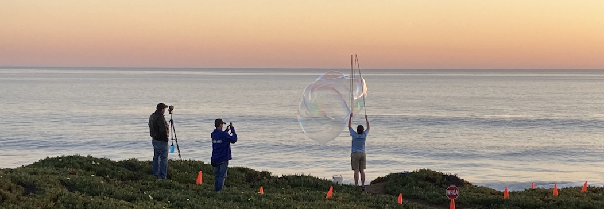

I'm a fourth year PhD candidate in the Department of Linguistics at UC Santa Cruz, where I am advised by Matt Wagers.
My primary research interests are in sentence processing, syntax, and memory, with an emphasis on studying the structural representations that guide online parsing operations.

Figure 1. Soap balloons on West Cliff